Presentation · 38 slides
The Remote VA Toolkit
Tools reviewed September 2026
1View the slides
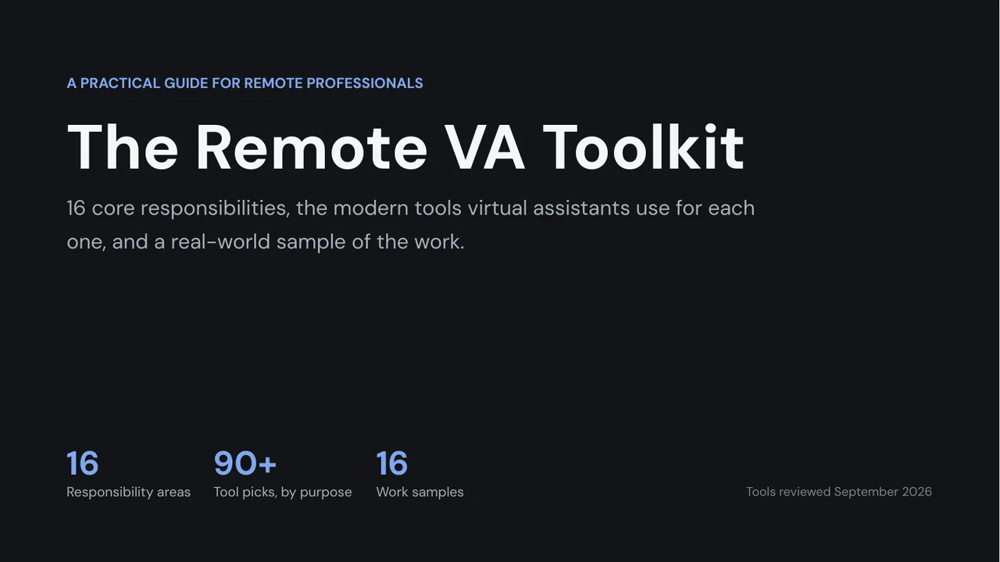
Slide 1 of 38The Remote VA Toolkit
Tip: click the slide, then use the arrow keys.
2All 38 slides
Start here Slides 1 to 4
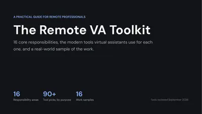
01 The Remote VA Toolkit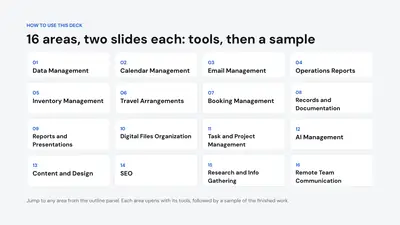
02 16 areas, two slides each: tools, then a sample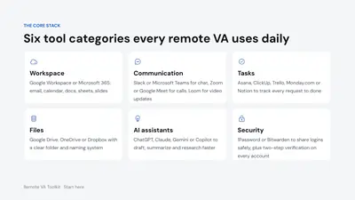
03 Six tool categories every remote VA uses daily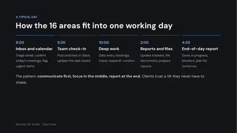
04 How the 16 areas fit into one working day


16 responsibility areas: tools, then a sample Slides 5 to 36
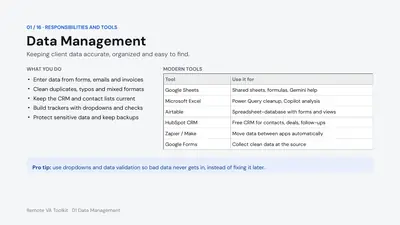
05 Data Management · tools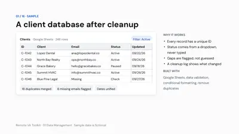
06 Data Management · sample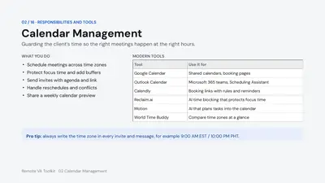
07 Calendar Management · tools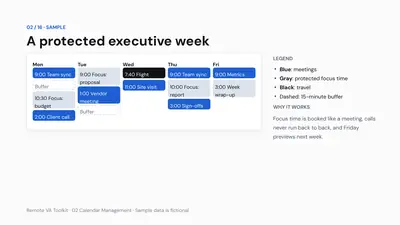
08 Calendar Management · sample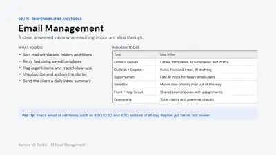
09 Email Management · tools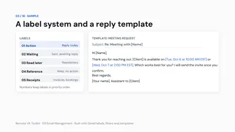
10 Email Management · sample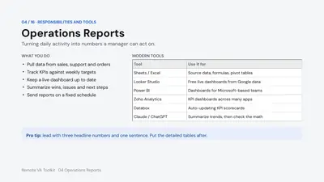
11 Operations Reports · tools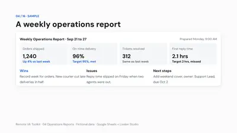
12 Operations Reports · sample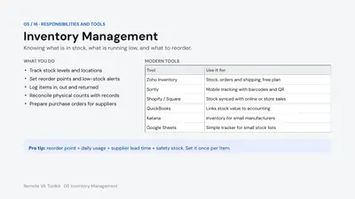
13 Inventory Management · tools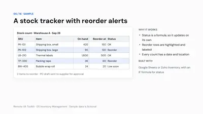
14 Inventory Management · sample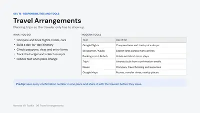
15 Travel Arrangements · tools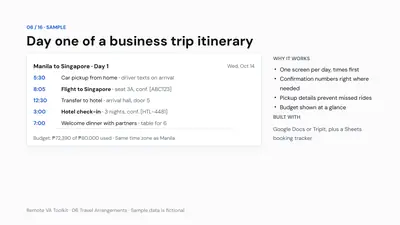
16 Travel Arrangements · sample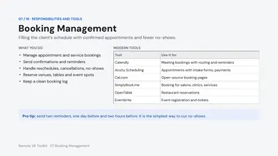
17 Booking Management · tools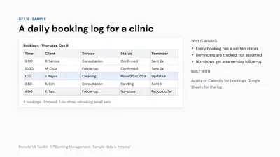
18 Booking Management · sample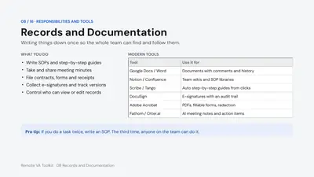
19 Records and Documentation · tools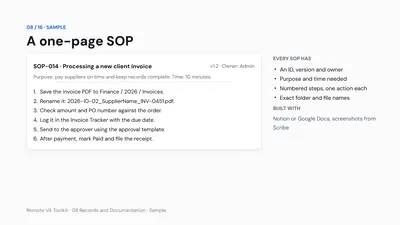
20 Records and Documentation · sample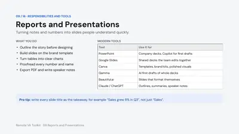
21 Reports and Presentations · tools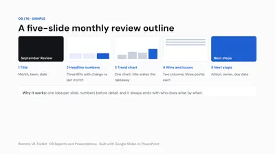
22 Reports and Presentations · sample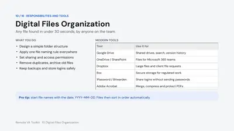
23 Digital Files Organization · tools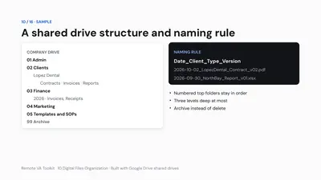
24 Digital Files Organization · sample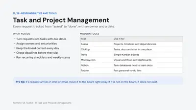
25 Task and Project Management · tools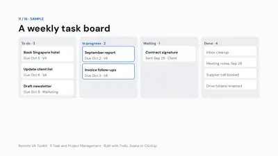
26 Task and Project Management · sample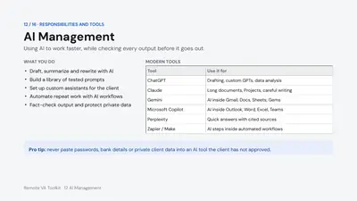
27 AI Management · tools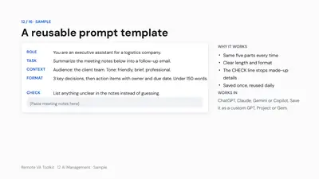
28 AI Management · sample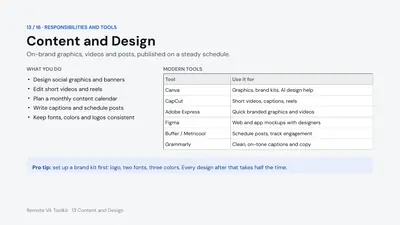
29 Content and Design · tools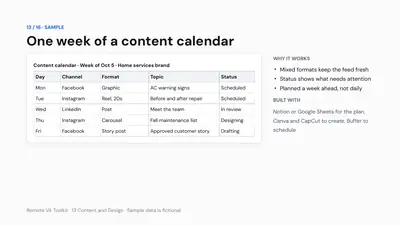
30 Content and Design · sample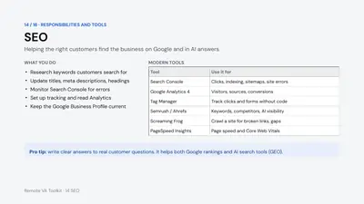
31 SEO · tools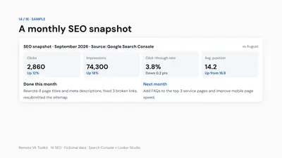
32 SEO · sample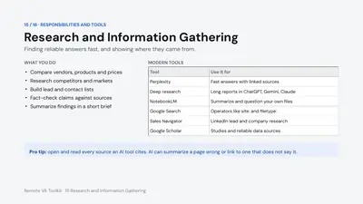
33 Research and Information Gathering · tools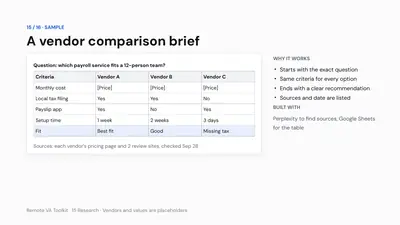
34 Research and Information Gathering · sample- 35 Remote Team Communication · tools
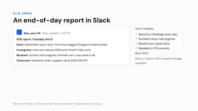
36 Remote Team Communication · sample


Wrap-up Slides 37 to 38


3How the deck is built
One pattern for every area
Each of the 16 areas gets two slides: the tasks and tools first, then a sample of the finished work.
Ready to present
Speaker notes on all 38 slides, a clear outline slide, and short titles that state the point.
Simple, consistent design
One typeface (DM Sans), blue for emphasis, near-black and grays for everything else.